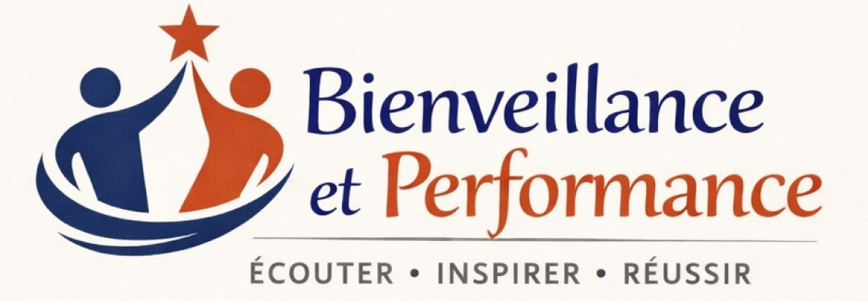

Régulation émotionnelle, authenticité et performance d'équipe
Une formation certifiante pour transformer la façon dont vous vivez et exprimez vos émotions, créer des relations authentiques et construire des équipes plus performantes et bienveillantes.
En savoir plus
28 mai 2026
de 8h30 à 12h30
Salle Copernic, 1er étage
Entreprises et Cités
40 rue Eugène Jacquet
59700 Marcq-en-Baroeul
Managers avec 5 ans d'expérience souhaitant développer leur intelligence émotionnelle et transformer leur approche managériale
Durée : 20 min
Créer un climat de sécurité, clarifier les objectifs personnels et les attentes de la formation. Vous définirez une situation concrète de communication difficile que vous aimeriez améliorer.
Durée : 40 min
Découvrez que les tensions viennent rarement du problème lui-même, mais de la manière dont il est interprété. Vous apprendrez à dissocier les faits, les interprétations et les émotions.
Durée : 45 min
Les mots ne décrivent pas la réalité, ils la créent. Une formulation factuelle ouvre le dialogue ; une formulation jugeante le ferme. Apprenez à reformuler pour apaiser au lieu d'amplifier.
Durée : 45 min
Maîtrisez la méthode DESC pour exprimer ce vous ressentez sans agresser ni éviter. Structurer votre message en quatre étapes : Décrire, Exprimer, Spécifier, Conclure.
Durée : 45 min
Une émotion non régulée influence directement la communication. Découvrez comment identifier vos niveaux émotionnels et utiliser des techniques simples de régulation (pause, respiration, recul).
Durée : 25 min
Comprendre ne suffit pas. Vous définirez 2 actions concrètes et simples à tester dès demain. Méthode Tiny Habits® : des comportements minuscules, faciles à ancrer et à répéter.
Durée : 20 min
Après l'action, le feedback transforme l'expérience en apprentissage. Vous utiliserez la structure SBI (Situation, Comportement, Impact) pour analyser vos résultats et ajuster votre approche.
Bienvenue dans cette formation Management & Communication Émotionnelle. Au cours de ces 4 heures, vous ne découvrirez pas de secret miracle, mais plutôt des outils simples et puissants pour transformer vos émotions en leviers de performance.
Le cœur du problème est rarement le problème lui-même. C'est surtout la manière dont nous le ressentons émotionnellement, dont nous l'interprétons, et dont nous l'exprimons. Vos émotions influencent directement votre communication. En apprenant à les reconnaître, les réguler et les exprimer authentiquement, vous créerez des espaces de dialogue authentique et de confiance.
Notre approche s'appuie sur trois piliers : comprendre et reconnaître vos émotions, les réguler pour une communication claire et passer à l'action concrète dès demain. Nous mettrons l'accent sur la pratique, les échanges réels et vos situations concrètes.
Je vous invite à être curieux, à explorer vos émotions sans jugement, à tester de nouvelles approches, et surtout à quitter cette formation avec un plan d'action personnel et réaliste. Le vrai travail commence sur le terrain, où vous pourrez expérimenter et progresser chaque jour.
Entreprises et Cités
40 rue Eugène Jacquet
59700 Marcq-en-Baroeul
Salle : Copernic, 1er étage
Accès facile en transports en commun (proche de la gare). Parking disponible sur site. Accueil à partir de 8h15. Café et viennoiseries vous seront proposés dès votre arrivée.
Prévoyez : Votre stylo, un carnet de notes, et une bonne dose de curiosité ! Tout le reste sera fourni.
Chez Bienveillance et Performance, nous croyons fermement que chacun mérite d'accéder à une formation de qualité, indépendamment de son handicap ou de ses besoins spécifiques.
Nous adaptons nos formations pour :
Contactez notre référent handicap Lola au moins 15 jours avant la formation pour que nous puissions organiser les adaptations nécessaires. Aucune question n'est indiscrète, et votre confidentialité est garantie.
Email : coursrbx.lb@gmail.com
Les aménagements sont mis en place gratuitement et en toute discrétion. Nous travaillons également avec les MDPH et les organismes d'aide spécialisés si besoin.
Consultez le programme complet de la formation avec les durées et contenus de chaque séquence.
Télécharger (PDF)Votre compagnon de formation : notes, exercices pratiques, et ancrage du apprentissages.
Télécharger (PDF)